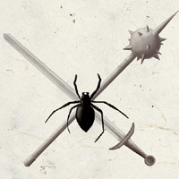

席文塔姆 Selvetarm（战士守护神）
（右三）
黑暗精灵神系 微弱神力
别称：罗丝的斗士 Champion of Lolth，静候的蜘蛛 the Spider That Waits
圣徽：锤剑交叉为底，黑色蜘蛛

居住界域：深坑魔网 Demonweb Pits
阵营：混乱邪恶 CE
神职：黑暗精灵战士 Drow warriors
信徒：野蛮人，黑暗精灵，战士，武人，爱好杀戮者
牧师阵营：混乱中立 CN，邪恶中立 NE，混乱邪恶 CE
神域：混乱 Chaos，邪恶 Evil，卓尔 Drow，蜘蛛 Spider，战争 War
喜好武器：毒锤 Venommace（重型钉头锤 heavy mace）
席文塔姆是一位内心充满憎恨的残酷神祇，战斗与毁灭是祂唯一关心的两件事。祂的心中充满了对一切活物的深切恨意－包括那位支配祂的女神；唯有在欣赏娴熟致命的战斗技巧时祂才会感到愉悦。当祂等候猎物落入预谋的陷阱时，静候的蜘蛛可展现出无人可比的耐心，但这都是为了接下来能在一场精心安排的攻击行动中尽情地享用战斗的快感。
席文塔姆几乎没有任何独立的教会系统，主要都是担任罗丝教会的军事力量。祂的信徒平时大都致力于精进自己的战斗技巧、执 行防御守备的任务、或者训练其它年轻战士的战技。席文塔姆的信徒们以其高超的战技闻名－但他们并不重视战略与策略的训练，因此少有祂的牧师能在军队中获得高位。
信奉席文塔姆的牧师在一天中第一场战斗（或战斗练习）结束后祈祷以获得神术。祂要求自己的信徒亦需遵行罗丝女祭司们举行的仪式。此 外，祂也要求信徒们－每当在战斗中放倒敌人时都必须高呼祂的名号。也正因为信徒们难以准确预期何时才会出现决定性的一击，因此他们大都习惯在战斗中不停地呼唤祂的名号。许多信奉席文塔姆的牧师都会兼职成为战士或野蛮人。
历史/与众神的关系 History/Relationship：
席 文塔姆是维伦与赞蒂拉（Zandilar，现为夏芮丝的多重面相之一）之间的不幸结晶。祂单独行动了许多个世纪，原本一度受到伊莉丝翠的感召而倾向良善， 但最终却因罗丝的谎言而堕落－祂被罗丝的谎言蛊惑，前去挑战赞那苏（Zanassu，一位爱好蜘蛛的妖魔领主）。当席文塔姆击败赞那苏并吸收了对方的力量后，祂那新生的良善之心瞬即被对方的邪恶本质吞噬，因而就此落入罗丝编织的心灵陷阱之中。祂目前忠诚地服侍着罗丝。席文塔姆只与罗丝及卡瑞茍斯 （Garagos）结盟－祂几乎仇视所有的神祇。
教义 Dogma：
战斗是展现个人力量的最佳方式，也唯有透过战斗与死亡你才能彻底了解自己的伙伴（指自己的武器）。随时精进自己的战斗技巧，并将这些技巧教给那些愿意随你一同战斗的的人。汝绝不可接受敌人的投降－也不可向敌人投降－应当希冀自己能在对抗强大敌人的血腥战斗中光荣地死去。
--
资料来源：费伦大陆信仰与神系《Faiths & Pantheons》
译者：一凡